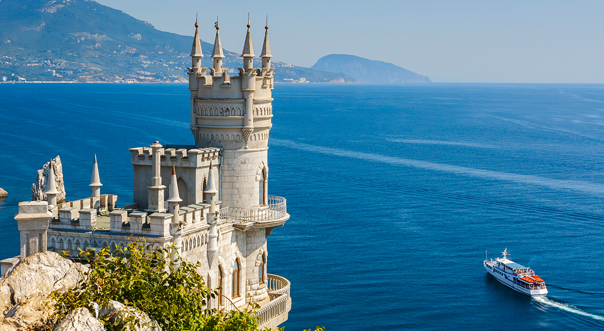

<section class="hero" aria-label="Главная секция">
    <div class="container hero__container">
        <div class="hero__photo-wrapper">
            
            <div class="router" aria-label="Стилизированная секция маршрута">
                Проложи маршрут
            </div>
        </div>

        <div class="hero__info">
            <h1 class="hero__title">Крым</h1>
            <p class="hero__descr">Создай путешествие твоей мечты</p>
        </div>

        <div class="cards" aria-label="Карточки главной секции">
            <!-- prettier-ignore -->
            @@include('./card-hero.html', {"classes": "", "imgSrc": "./img/icons/icons.svg#hero_tram", "title": "Транспорт", "subtitle": "От и до", "description": "Только здесь можно покататься на самом протяженном в мире троллейбусном маршруте, который соединяет Ялту и Симферополь и составляет 90 км"})
            @@include('./card-hero.html', {"classes": "", "imgSrc": "./img/icons/icons.svg#hero_sun", "title": "Климат", "subtitle": "Три в одном", "description": "В Крыму встречаются сразу три климатических зоны. Здесь можно побывать в субтропиках, покорить горные вершины и отдать свое сердце бескрайней степи"})
            @@include('./card-hero.html', {"classes": "", "imgSrc": "./img/icons/icons.svg#hero_easel", "title": "Культура", "subtitle": "Место силы", "description": "Тут творили Айвазовский и Грин, Толстой и Чехов, здесь была создана группа “Кино” и снято множество популярных фильмов. Ищите знакомые пейзажи на экране!"})
            @@include('./card-hero.html', {"classes": "", "imgSrc": "./img/icons/icons.svg#hero_vase", "title": "Флора", "subtitle": "Цветет и пахнет", "description": "Степные тюльпаны, невинные подснежники, лавандовые поля и можжевеловые рощи… Крым – это 2700 видов растений, среди которых экзотические и редкие виды из Красной книги"})
            <div class="route-bg"></div>
        </div>
    </div>
</section>
